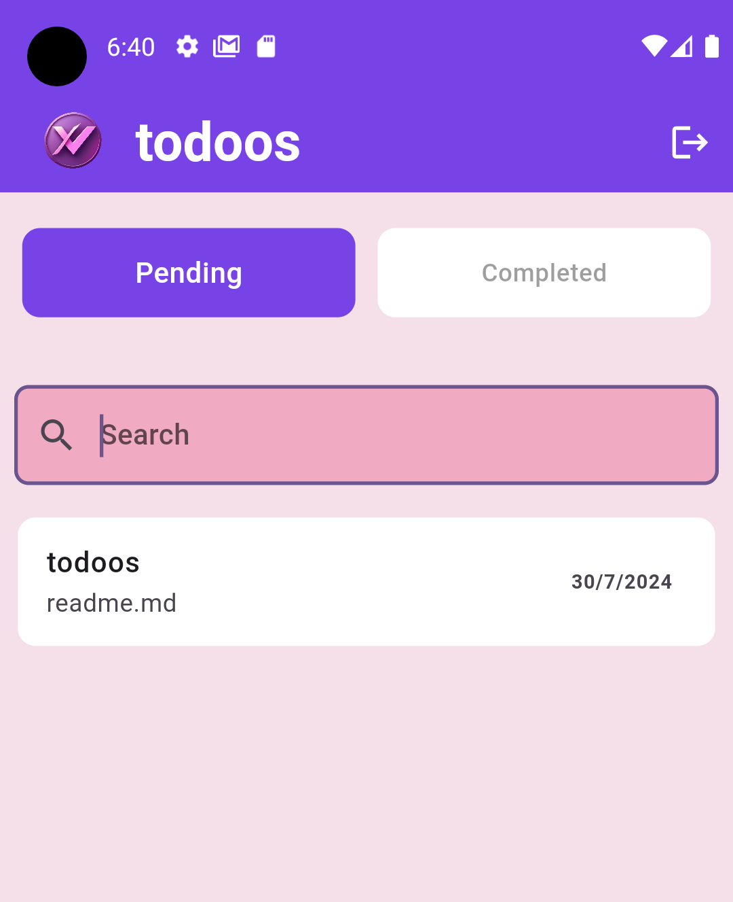
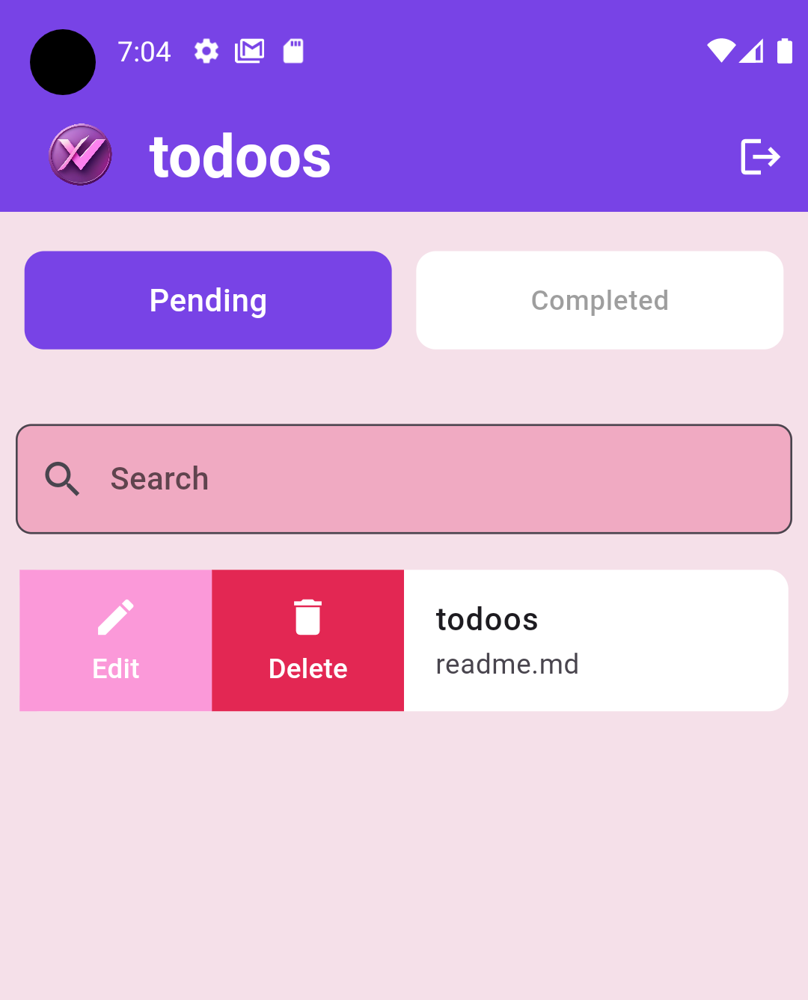
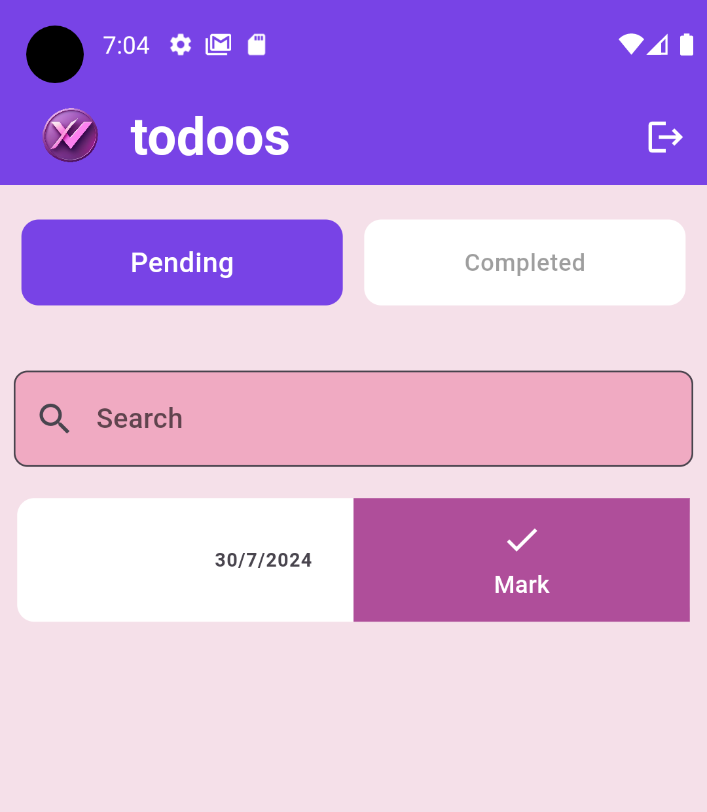
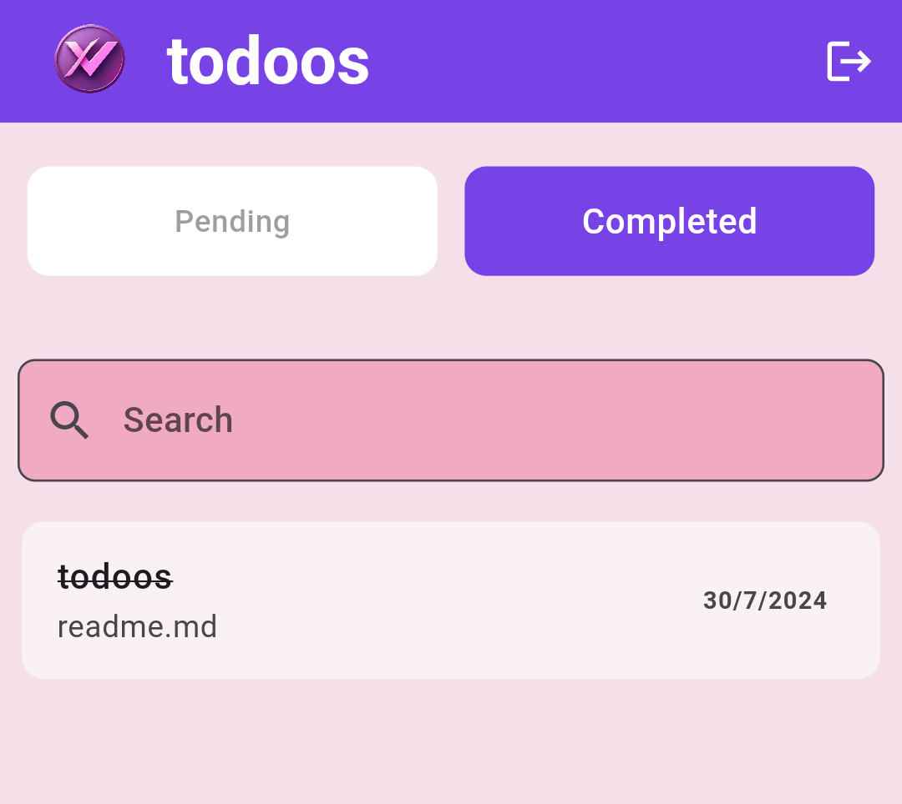

Overview
Todoos is a task management application that allows users to manage their tasks easily. With Todoos, users can add, edit, complete and delete tasks, and organize them quickly through a clean and user-friendly interface. The application supports logging in with Google accounts or email, uses Firebase Authentication for secure access, and stores all task data in Firebase Firestore. Users can view their pending and completed tasks on separate pages, search within their tasks, and see their most recently added tasks first thanks to Firestore-based sorting.
Key Features
- Secure email sign-in using Firebase Authentication
- Quick login with Google accounts
- Separate pages for pending and completed tasks
- Add new tasks to keep everything organized
- Edit and update existing tasks at any time
- Mark tasks as completed to track progress and motivation
- Delete tasks that are no longer needed
- Search through tasks to quickly find specific items
- Tasks sorted from newest to oldest via Firestore
Gallery




